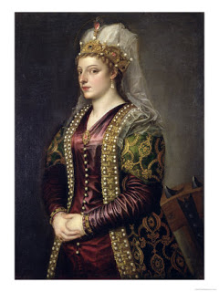

Kiddushin 80 - Seclusion with a Woman
A man may not be secluded even with two women (and certainly not with one), because a woman may hope that her female companion can be convinced to duplicate her act - following the teaching that the minds of women are easily swayed.
One may be secluded with two women if his wife is present, and he may even sleep in the same room as them in an inn.
A woman may be secluded with two men if they are of high moral character, but if they aren't, then even with a group of ten it is not permitted.